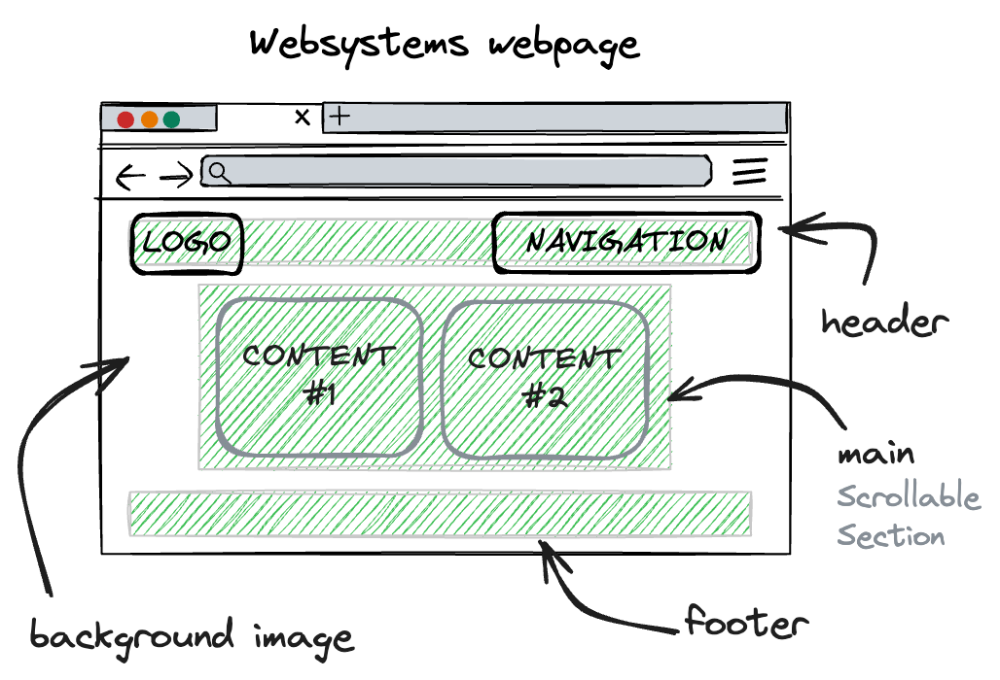

Comments & Reflections
Personal Reflection
Throughout the planning process of my website, its design underwent several iterations. Ultimately, I opted for a simplistic style aimed at enhancing user experience by creating an easy navigation system with enjoyable readability. Initially, I envisioned a colour scheme of blue and white; however, I later pivoted towards a predominant theme with various shades of orange, complemented by a captivating sunset background.
Given that this was my first-time coding, I encountered challenges with CSS and HTML, finding them both intricate and time-consuming. Nevertheless, I am pleased with the outcome—a website that aligns with my original vision and offers a seamless user experience.
Technical aspects
The website is structured as follows: it comprises multiple div containers, with the main ones across all four pages including the main container, navbar, as well as multiple div containers such as the logo. Each of these elements possesses distinct style properties and serves a unique purpose.
A diagram of the main elements that make up each page is provided below:
A "body" style sets a constant background image - darkened by using a linear colour gradient
A "header" container is used to manage both a consistently applied logo on the left side of the page, and four navigation links on the right hand side. CSS is used to enabled hyperlinks to change colour upon hover using the 'a:hover' selector
The "main" container delivers the main content. CSS is used to enable 2 columsn of content for some pages. This container can scroll when there is too much content to fit on one page. CSS also allows the columns to dynamically change to be arranged vertically if the page width becomes too small.
The "footer" container allows for common messages to appear at the bottom of very page.
Information Overview
| Filename | Pagename | Outline |
| index.html | Welcome to my website | The central focal point of my website is the homepage, which establishes the framework for the entire site. Positioned prominently at the main focal point is the page title. Below the page title, visitors are greeted with a personal introduction, detailing my background and the subjects I'm currently studying at UTS. The homepage also features a table designed with 'transparent' borders that seamlessly blending into the layout. Within this table, an image captures me engaged in a game of basketball, offering a glimpse into my interests and activities. |
| past.html | My life so far | My 'Past' page follows a structure similar to the home page. It delves into not only my previous coding and programming experiences but also delves into my personal passions. I explore how my initial interest in artificial intelligence was sparked and how my studies in stage 6 deepened my fascination with AI. Additionally, I highlight my achievements in sports. Just like the index page, this section features a table layout of my HSC results and includes images of myself. |
| future.html | Future | My 'future' page serves as a platform that outlines my post-degree aspirations. It summarises my career objectives, my ambitions throughout my university journey, and the array of potential pathways I wish to explore in the years ahead. |
| comments.html | Comments & Reflections | This comments page offers a comprehensive reflection encompassing various facets of the website, including its personal appeal, technical intricacies, aesthetic design, and accessibility features. |
| websystems.css | n/a | The css file controls all the design elements of my website. Mainly using colour, borders, padding and position selectors. |
Website Aesthetics
The websites aesthetics are designed to be appealing, yet clear and easy to navigate and read. Here are some points outlining some of the aesthetical features of the website
- The website's colour palette draws inspiration from the colours of a sunset, predominantly featuring various shades of orange. This blend of the background and colour pallate provides a visually captivating webpage.
- The main text, in #fff, stands out distinctly, especially against the deeper tones of orange thoughtfully chosen for contrast. Consistency in these colour schemes is maintained across all pages of the website.
- The sans-serif font is the primary font used, enhancing readability and visual appeal for users navigating through the content.
- Interactive elements, such as navbar items, dynamically respond to user actions, with colour changes signalling engagement. Leveraging the orange colour scheme, buttons transition to shades of orange upon hovering, instantly catching the user's eye. To ensure a seamless experience, a gentle 0.3-second transition eases the colour change, alleviating any sense of urgency or stress for the user.
- The page title commands attention as the largest element, guiding users' focus to the information.
- To enrich the visual depth of the page, a subtle 'linear-gradient' fade effect, transitioning from transparent at the bottom to semi-transparent black at the centre, enhances the horizon's depth to the page's centre, elevating its visual appeal.
- Strategic padding within div containers, between images, text, and tables, minimizes clutter, ensuring a clean and organized appearance for the website.
- In the comments section, subtle adjustments, such as left-aligned subheadings with increased font size and distinct typeface, facilitate easy comprehension and navigation, delineating between topics or questions effectively.
- Moreover, ample white space, both horizontally and vertically, contributes to the website's overall polish and cleanliness, enhancing its presentation.
Website Accessibility
- All images (excluding background images) are accompanied by descriptive 'alt' attributes, providing individuals with visual impairments a comprehensive understanding of the image content.
- The main body text prominently contrasts with the background colour, facilitating effortless reading of the information presented on the page.
- Both the page title and menu items are prominently displayed with increased size and clarity, aiding users in easily navigating the website and maintaining awareness of their location within the site.
- I have attempted to make the website relative according to the size the user has the page, helping users on iPhone have similar experiences to those on desktop screens.